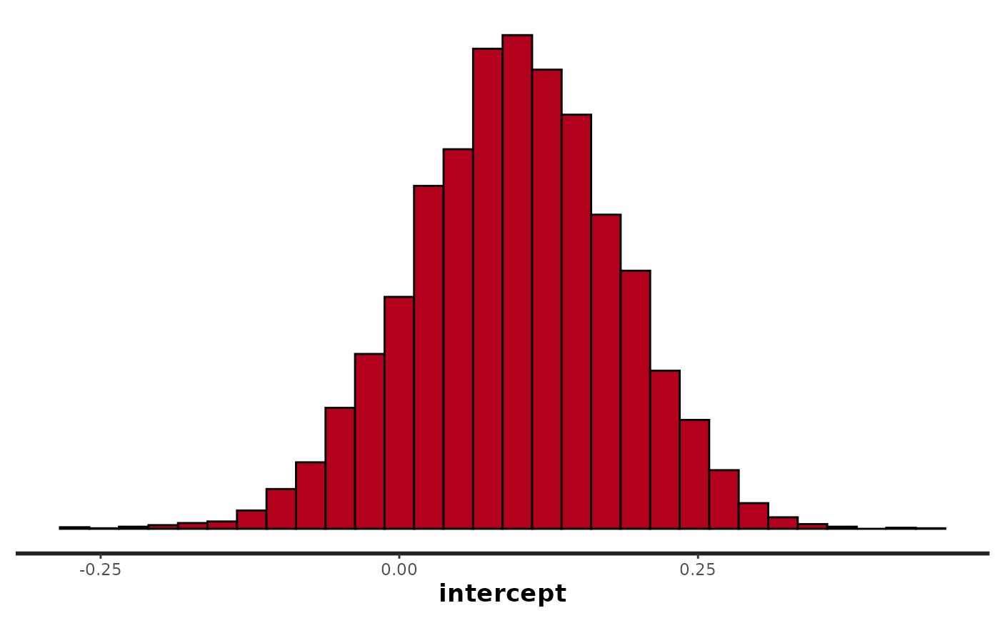
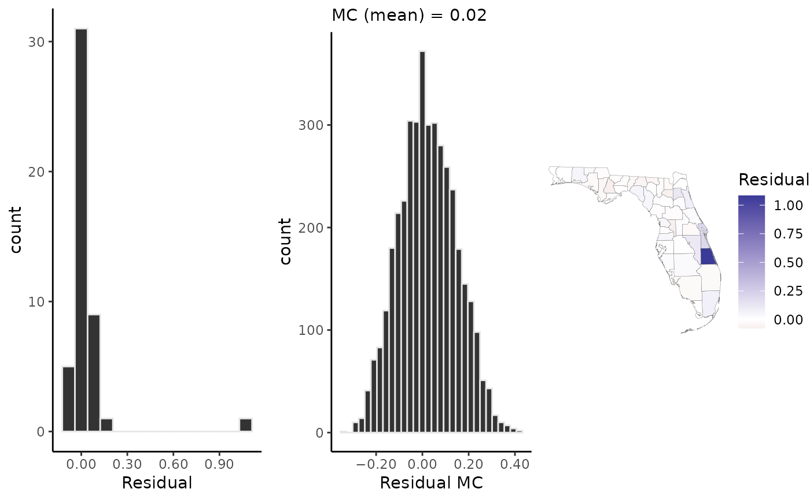
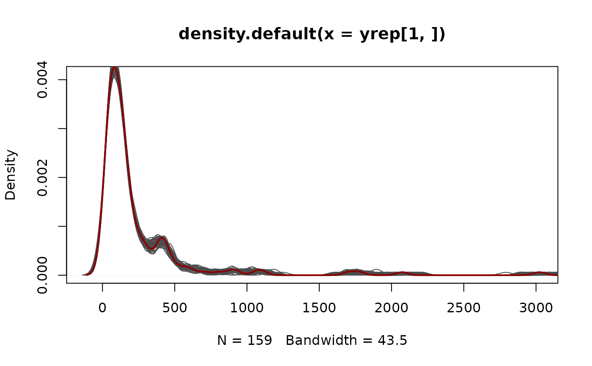

geostan_fit.RdMethods for fitted geostan models: extract residuals, fitted values, posterior predictive distribution or spatial component from a spatial regression model; extract samples from the posterior distribution; print regression results; plot posterior distributions.
# S3 method for geostan_fit print(x, probs = c(0.025, 0.25, 0.5, 0.75, 0.975), digits = 3, ...) # S3 method for geostan_fit plot(x, pars, plotfun = "dens", ...) # S3 method for geostan_fit as.matrix(x, ...) # S3 method for geostan_fit as.data.frame(x, ...) # S3 method for geostan_fit as.array(x, ...) # S3 method for geostan_fit residuals(object, summary = TRUE, ...) # S3 method for geostan_fit fitted(object, summary = TRUE, ...) # S3 method for geostan_fit spatial(object, summary = TRUE, ...)
| x | A fitted model object of class |
|---|---|
| probs | Argument passed to |
| digits | number of digits to print |
| ... | additional arguments. |
| pars | parameters to include; a character string or vector of parameter names. |
| plotfun | Argument passed to |
| object | A fitted model object of class |
| summary | Logical (default |
return either a matrix containing all samples for each observation, or a data.frame containing a summary values for each observation.
# \dontrun{ library(ggplot2) library(sf) data(ohio) fit <- stan_esf(gop_growth ~ historic_gop + log(pop_density), data = ohio, scalex = TRUE, C = shape2mat(ohio), chains = 3, iter = 1e3, refresh = 0 # less printing )#> #>#>#>#>#> #>#>#> Location Scale #> historic_gop 0 12.48876 #> log(pop_density) 0 12.48876#> #>#>#>#>#>#> #>#>#>#>#> Spatial Regression Results #> Formula: gop_growth ~ historic_gop + log(pop_density) #> <environment: 0x56456dc14670> #> Data models (ME): none #> Spatial method (outcome): ESF #> Likelihood function: gaussian #> Link function: identity #> Residual Moran Coefficient: -0.062 #> WAIC: 440.17 #> Observations: 88 #> RHS global shrinkage prior: 1 #> Inference for Stan model: esf. #> 3 chains, each with iter=1000; warmup=500; thin=1; #> post-warmup draws per chain=500, total post-warmup draws=1500. #> #> mean se_mean sd 2.5% 25% 50% 75% 97.5% n_eff #> intercept 10.710 0.005 0.273 10.175 10.524 10.711 10.894 11.248 2772 #> historic_gop -2.643 0.011 0.416 -3.460 -2.930 -2.633 -2.355 -1.828 1314 #> log(pop_density) -5.617 0.016 0.472 -6.535 -5.929 -5.599 -5.306 -4.715 926 #> sigma 2.583 0.009 0.237 2.151 2.416 2.577 2.732 3.086 623 #> Rhat #> intercept 1.000 #> historic_gop 1.000 #> log(pop_density) 0.999 #> sigma 1.005 #> #> Samples were drawn using NUTS(diag_e) at Wed Jan 6 13:43:06 2021. #> For each parameter, n_eff is a crude measure of effective sample size, #> and Rhat is the potential scale reduction factor on split chains (at #> convergence, Rhat=1).plot(fit)beta.samples <- as.matrix(fit, pars = "beta") beta.mean <- apply(beta.samples, 2, mean) print(beta.mean)#> historic_gop log(pop_density) #> -2.642785 -5.617456#> mean sd q.025 q.20 q.50 #> residual[1] -1.394724858 1.082185 -3.492486 -2.3263137 -1.39720695 #> residual[2] -0.499430149 1.156296 -2.723717 -1.4563700 -0.53903719 #> residual[3] -0.169520031 1.332216 -2.712102 -1.3677678 -0.14524802 #> residual[4] 0.004179592 1.093328 -2.072192 -0.9111004 0.01948238 #> residual[5] -10.079872128 1.365287 -12.806702 -11.2503770 -10.08564660 #> residual[6] -0.586340460 1.320298 -3.145613 -1.6501669 -0.61805606 #> q.80 q.975 #> residual[1] -0.4830950 0.7416464 #> residual[2] 0.4557499 1.8616533 #> residual[3] 0.9768082 2.3948617 #> residual[4] 0.9084659 2.1151430 #> residual[5] -8.8689088 -7.4433015 #> residual[6] 0.4785517 2.0977769#> [1] 1500 88# extract and plot the posterior mean of the spatial filter sf <- spatial(fit, summary = TRUE) head(sf)#> mean sd q.025 q.20 q.50 q.80 #> esf[1] 1.24871956 1.0353019 -0.8334455 0.36901304 1.25510136 2.1011415 #> esf[2] 0.29937722 1.0979901 -1.9748424 -0.61312776 0.32983219 1.1996469 #> esf[3] 0.97612541 1.2394916 -1.5634494 -0.03359518 0.96526845 2.0316175 #> esf[4] 0.08332139 0.9796594 -1.8194366 -0.73275520 0.06054599 0.8998535 #> esf[5] -2.33983312 1.2941846 -4.9090477 -3.46472734 -2.33905110 -1.2577319 #> esf[6] 2.29425486 1.3575322 -0.4915784 1.20158490 2.30740470 3.4161100 #> q.975 #> esf[1] 3.2286875 #> esf[2] 2.3854663 #> esf[3] 3.2959324 #> esf[4] 2.0249841 #> esf[5] 0.1602606 #> esf[6] 4.9675513# }